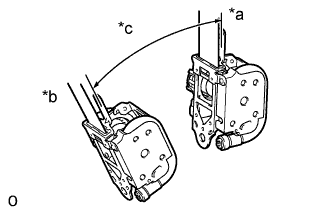
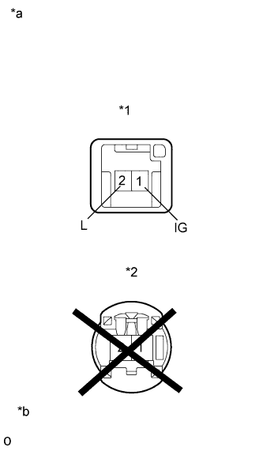

FRONT SEAT OUTER BELT ASSEMBLY > INSPECTION |
| 1. INSPECT FRONT SEAT OUTER BELT ASSEMBLY |
|  |
Before installing the seat belt, check the ELR.
When the inclination of the retractor is 15° or less, check that the belt can be pulled from the retractor. When the inclination of the retractor is more than 45°, check that the belt locks. If the operation is not as specified, replace the front seat outer belt assembly.
| *a | Unlock |
| *b | Lock |
| *c | 45° |
|  |
Check the tension reducer operation.
Connect the positive (+) lead of the battery to terminal 1 of the tension reducer connector and the negative (-) lead to terminal 2.
Check that an operating sound is heard when the magnetized solenoid is attracting the plunger.
Pull out the seat belt and let it retract. Listen to the operating sound.
Pull out the seat belt again, disconnect the negative (-) lead of the battery and let it retract. Listen to the operating sound again and check that the operating sound volume has increased.
If the result is not as specified, replace the front seat outer belt assembly.
| *1 | Tension Reducer Connector |
| *2 | Pretensioner Connector |
| *a | Component without harness connected (Front Seat Outer Belt) |
| *b | Do not apply battery voltage |